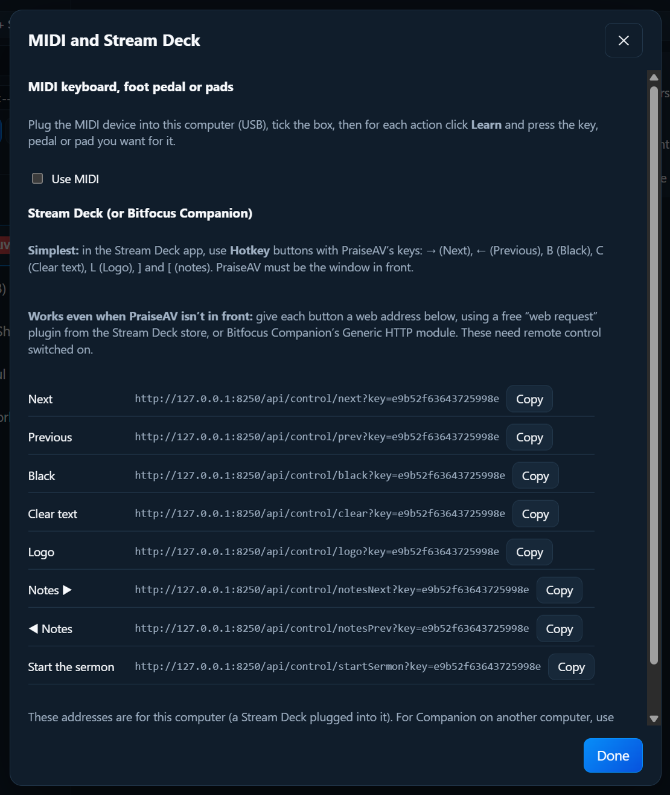

Running a service
MIDI and Stream Deck
Besides the keyboard, a clicker and the phone remote, PraiseAV can be run from:
- a MIDI foot pedal, keyboard or pad controller: handy for a worship leader who plays and moves the words themselves
- a Stream Deck (Elgato’s box of buttons), or Bitfocus Companion
Click MIDI and Stream Deck… at the bottom right of PraiseAV.

MIDI
- Plug the MIDI device into the computer (USB). A keyboard with a USB socket, a foot pedal with a USB MIDI box, or a small pad controller all work.
- Tick Use MIDI. PraiseAV lists the devices it found.
- For each action you want, click Learn, then press the key, pedal or pad for it. It shows what it learnt, for example Note C4 (60) or Controller 64.
The actions: Next, Previous, Black, Clear text, Logo, Notes ▶, ◀ Notes and Start the sermon.
Click ✕ to forget one. PraiseAV remembers the rest on this computer.
Stream Deck
The simple way: hotkeys
In the Stream Deck app, make Hotkey buttons with PraiseAV’s keys:
| Button | Hotkey |
|---|---|
| Next | → (right arrow) |
| Previous | ← (left arrow) |
| Black | B |
| Clear text | C |
| Logo | L |
| Notes ▶ / ◀ Notes | ] and [ |
| Live video on or off | V |
PraiseAV must be the window in front for hotkeys to work.
Buttons that always work: web addresses
Each action also has a web address, which works even when PraiseAV isn’t in front, or from another computer running Bitfocus Companion.
- In MIDI and Stream Deck…, click Switch remote control on if it isn’t on already.
- Click Copy next to an action to copy its address.
- In the Stream Deck app, use a free web request plugin from the Stream Deck store (search “web request”), and paste the address into a button. In Bitfocus Companion, use the Generic HTTP module with a GET request.
The addresses contain a secret key, so only your buttons can use them. Make a new key if you think someone else has the addresses: the old ones stop working.
The copied addresses start http://127.0.0.1, for a Stream Deck plugged into the PraiseAV computer. For Companion on another computer, use the address shown in the window instead.